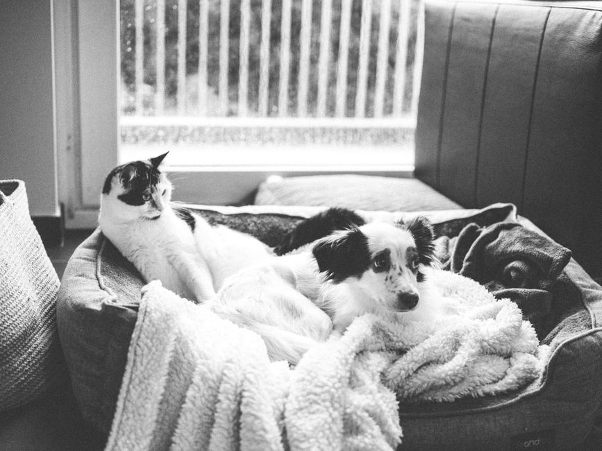
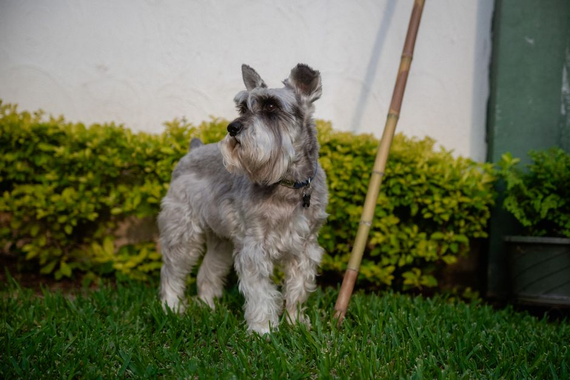

Cómo limpiar eficazmente la nicho de tu perro
Cuando se trata de mantener la salud y el bienestar de tu perro, la higiene es fundamental, y una parte importante de ello es mantener limpio el espacio donde tu mascota se sienta más cómoda: su nicho. Aquí te compartimos las mejores técnicas y consejos para limpiar eficazmente la nicho de tu perro.

Photo: Ricardo Oliveira / Pexels
Equipamiento necesario
Antes de comenzar, asegúrate de tener todo lo que necesitas a mano. Es recomendable tener:
- Un cepillo para suelos o un trapo suave
- Un aspirador de mano
- Un limpiador de suelos (de preferencia natural)
- Un paño húmedo
- Un secador de pelo (para secar el área rápidamente)
Pasos para una limpieza efectiva
1. Retira la basura y el exceso de pelos

Photo: Daniela Sánchez / Pexels
Comienza por recoger cualquier basura o pelos que puedan haberse acumulado. Usa un cepillo para suelos o un trapo suave para levantar estos residuos. Este paso es crucial para evitar que estos restos se asienten y sean más difíciles de remover.
2. Aspira la nicho
Utiliza un aspirador de mano para recoger el polvo y el pelo que pueden haberse alojado en los rincones y en el suelo. Este paso es especialmente importante si tu perro tiene pelo largo o si la nicho tiene un tapizado.
3. Aplica un limpiador de suelos
Una vez que hayas aspirado, puedes aplicar un limpiador de suelos suave. Es importante elegir un producto que no sea agresivo y que no cause irritación en la piel de tu perro. Podrías optar por productos naturales como el vinagre blanco diluido o una mezcla de jabón suave y agua.
4. Limpia los rincones
Asegúrate de alcanzar todos los rincones y espacios ocultos con tu limpiador. Puedes utilizar un paño húmedo para aplicarlo en esas zonas difíciles de limpiar.
5. Enjuaga con agua
Si usaste un limpiador, es importante enjuagar la nicho con agua para eliminar cualquier residuo. Esto es especialmente importante si has usado productos químicos.
6. Seca rápidamente
Usa un secador de pelo o un paño suave para secar la nicho. Es importante secarla completamente para prevenir la formación de malos olores y hongos.
7. Deja que se seque
Deja que la nicho se seque por completo antes de que tu perro lo use. Esto ayuda a prevenir la formación de bacterias y malos olores.
Mantén la limpieza regular
Para mantener una nicho limpia y segura, es recomendable limpiarla regularmente. Puedes hacerlo una vez por semana, dependiendo de la frecuencia con la que tu perro la utilice y la cantidad de actividad que tenga en ella.
Conclusión
Seguir estos pasos te ayudará a mantener una nicho limpia y segura para tu perro, lo que a su vez contribuirá a su bienestar general. Recuerda que una nicho limpia también es un ambiente más agradable para ti y tu mascota. ¡Esperamos que estos consejos te sean útiles!